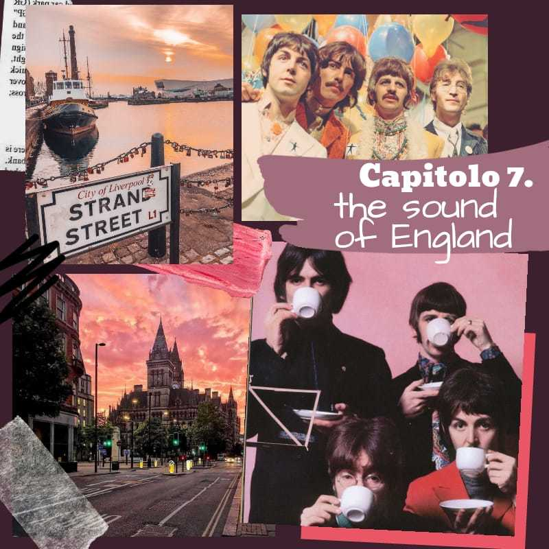
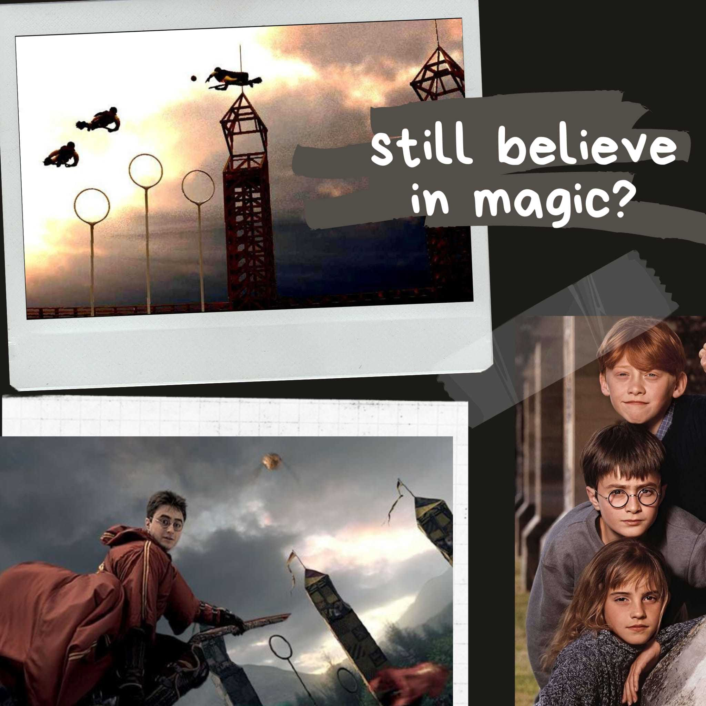
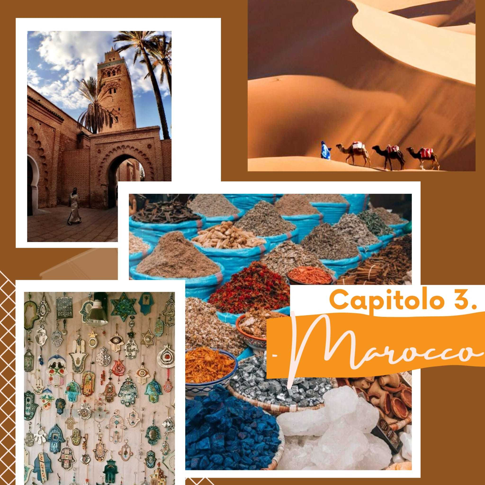

Puntate.
Ascolta tutte le puntate di Borderline!
Capitolo 10. Danimarca.
Vieni con noi alla scoperta di questa nuova nazione.
Tra scioglilingua, dolci e biciclette ci sarà da divertisi.
Capitolo 9. Filippine.
Vi accompagnamo nelle Filippine.
Un viaggio tra spiagge bianchissime e musica inaspettata.
Capitolo 8. Argentina.
In viaggio verso l'Argentina.
Terra di tango, passione, carne squisita e mate.
1984.
Puntata speciale basata sul celebre romanzo di George Orwell
... tutta da ascoltare!
Scambio di scambi.
Chiacchere tra ragazze del linguistico a proposito di scambi culturali.
Una puntata piena di aneddoti e disavventure divertenti.

Capitolo 7. Gran Bretagna.
Sbarchiamo in Gran Bretagna, precisamente a Liverpool.
Percorriamo la città tramite curiosità singolari sui Beatles.
La città incantata.
Visita insieme a noi "La città incantata", capolavoro di Hayao Myazaki.
Lasciati avvolgere dall'atmosfera magica e orientale.
Capitolo 6. Polonia.
Ascolta il racconto di un viaggio in Polonia.
Ricordare, o meglio, non dimenticare è fondamentale!
Capitolo 5. Giappone.
Alla scoperta di un altro paese straordinario: il Giappone.
Una terra mistica raccontata attraverso libri particolari.

Harry Potter.
Questa volta ti proponiamo un viaggio letterario.
Curiosità divertenti sulla serie di romanzi più amata dai ragazzi.
Capitolo 4. Stati Uniti.
In viaggio verso gli Usa.
Racconto di un'esperienza di anno all'estero, tra cultura e tradizioni.

Capitolo 3. Marocco.
Ci spostiamo in Marocco.
Scopriamo la sua cultura, diversa dalla nostra e per questo così affascinante.
La danza nel mondo.
Un giro del mondo alla scoperta dei più stravaganti balli tipici.
Tra danza maori, balli country e sirtaki ci sarà da divertirsi.
Capitolo 2. Ucraina.
In viaggio verso l'Ucraina.
Un paese ricco di tradizioni e paesaggi spettacolari.
Capitolo 1. Romania.
Visita con noi la Romania.
Alla scoperta di tutte le caratteristiche e singolarità della nazione.